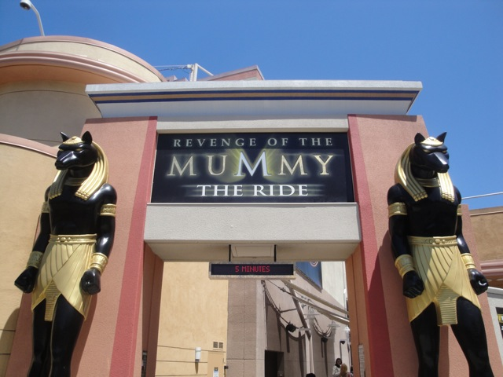
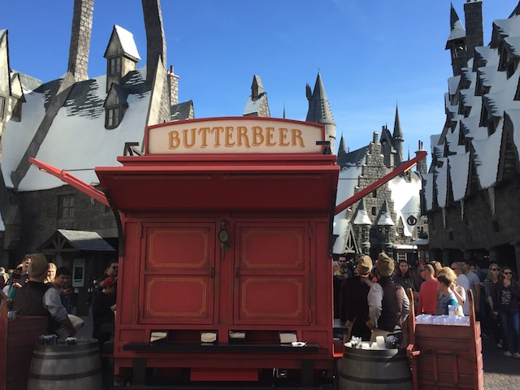

| |
Universal Studios Hollywood 2017
All right. Time for another update. And it's time for us to head back to a park that may be in So-Cal, but we very rarely go to. Yep. We're back at Universal Studios Hollywood. Now Universal is a park we don't visit too often partially because the park is mostly simulators, but mainly, it's because of money. I was reminded today of just how f*cking expensive this place is. And yeah. Universal Studios Hollywood is a once in a while park. It's really fun to visit once in a while, but its a place you burn out of pretty quickly. I know I hadn't visited the park since 2011, and yeah. This place has certainly changed. And yet, it hasn't. Yeah, they've added A LOT of new rides in the time span. But it still essentially feels like the same park. I know the park added a lot since my last visit, but I knew that they were building the Wizarding World of Harry Potter, and said that I'd wait for that. I could wait Transformers out. And then it eventually opened, but thanks to financial lockdown, I procrastenated to getting back out here (It's hard to justify coming here at the prices). But I knew that the time had come. So let's come and check out the park.
Just need to make sure no one is going to commit suicide in the park today (though Seriously. I'm happy that they don't have the metal detectors on the rides like they do in Florida). =)
I sure hope you like motion simulators, cause you're going to be riding a lot of them today. ;)
Ooh! Hollywood Magic!!
All right. Let's start out with the newest attraction here, as well as what drove us to come back here. The Wizarding World of Harry Potter.
Hey Celeste and Allie! I made it out to Harry Potter world. I know you both want to come here considering what die-hard Potterheads you both are. ;)
 OK. Let's talk about their newest dark ride. Forbidden Journey. Yeah, this ride takes you through Hogwarts. You fly through a Quidditch Match, fight dementors, and those killer trees. But what I really want to talk about is how this is a dark ride that uses the same technology as Knights Tournament and other Robot Arms, which are on our Top 10 Flat Rides. So I was really excited to see what this technology could do. And while Forbidden Journey is a lot of fun, don't go in expecting Level 5 flipping. You won't get it. And while it's still a really good simulator, it's not Spiderman good. Sorry. Still really like Forbidden Journey.
OK. Let's talk about their newest dark ride. Forbidden Journey. Yeah, this ride takes you through Hogwarts. You fly through a Quidditch Match, fight dementors, and those killer trees. But what I really want to talk about is how this is a dark ride that uses the same technology as Knights Tournament and other Robot Arms, which are on our Top 10 Flat Rides. So I was really excited to see what this technology could do. And while Forbidden Journey is a lot of fun, don't go in expecting Level 5 flipping. You won't get it. And while it's still a really good simulator, it's not Spiderman good. Sorry. Still really like Forbidden Journey.
All are welcome on Forbidden Journey. Except for Slytherins. We don't tolerate their kind around here. Yeah, I admit it. I'm housist.
 But while Forbidden Journey is the big new ride for the Wizarding World, don't forget. They also added Flight of the Hippogriff. YAY!!! New credit!!
But while Forbidden Journey is the big new ride for the Wizarding World, don't forget. They also added Flight of the Hippogriff. YAY!!! New credit!!
OK. This is weird. It's a Mack Youngstar. Fine with me, I really like the standard Mack Youngstar. But the layout is exactly that of the big Roller Skater from Vekoma. Is there a reason you couldn't just get a big Vekoma Roller Skater and had to resort to having Mack make it? It's fine. Just a nerdy observation. =)
 Hey. I just realized. I think this the first time my first coaster of the year was also a new credit. Yeah. It is. Fun little fact. =)
Hey. I just realized. I think this the first time my first coaster of the year was also a new credit. Yeah. It is. Fun little fact. =)
Are you worried that people just aren't riding your Roller Skater? Worried that you'll be spotted as a credit whore? Have no fear. Just theme it to Harry Potter and the people will come.
♫Double Double Toil and Trouble♫
All right. That's enough Harry Potter. Time to head on down to the lower level.
Seriously. You lazy people need to take the stairs on down.
 Time for the other big attraction they added since I last came. Transformers. And I can tell you. I was super happy to be riding another ride that uses the Spiderman technology. While I will admit that it's not quite as good as Spiderman, it's still really good and will totally land a spot on our Top 10 Dark Rides.
Time for the other big attraction they added since I last came. Transformers. And I can tell you. I was super happy to be riding another ride that uses the Spiderman technology. While I will admit that it's not quite as good as Spiderman, it's still really good and will totally land a spot on our Top 10 Dark Rides.
And don't worry. You don't see Devestators balls on the ride (WHY DID THEY THINK THAT WAS A GOOD IDEA IN TRANSFORMERS 2!!? WHY!!?).

OK. Let's get back to a ride that isn't new for me. Revenge of the Mummy.
 It may not be as good as Florida Mummy, but it's still a really good ride.
It may not be as good as Florida Mummy, but it's still a really good ride.
 That anti-climactic ending still pisses me off! Seriously, this is worse than Adventure Express @ Kings Island.
That anti-climactic ending still pisses me off! Seriously, this is worse than Adventure Express @ Kings Island.
And of course, we have to ride Jurassic Park while visiting Universal Studios.
 Nice T-Rex. I want to pet the T-Rex.
Nice T-Rex. I want to pet the T-Rex.
You mean I can't pet the T-Rex? Lame. =(
Just a quick reminder that hats are from the devil.
Hmm. I didn't think they had boats like that 65 million years ago.
DAMN IT!!! I actually got wet on Jurassic Park.
Oh god. WHY!!? I was never a fan of this show as I've always found reality TV to be stupid, especially polished celebrity garbage like this. Always hated it. But now...Ugh. I can't think of this show without feeling sick. Sorry, but this show pretty much now has ties to bigotry, fascism, and sexual assault. And of course, they have to get another actor gone government. No, that's not fair. Arnold Schwarzenegger > Fuhrer von F*ckface X 1,000,000. Still, keeping this show is terrible. PLEASE don't tell me that people are watching this crap!!
I will admit this. I really do love the view and the setting of Universal Studios Hollywood.
Finally, there's one last new attraction that they've added to the park since my last visit. Hell, they added a new land. And that ride is...
 *groan* Despicable Me: Minion Mayhem (Why are these movies popular?).
*groan* Despicable Me: Minion Mayhem (Why are these movies popular?).
Hey Universal Studios. It's January (I totally understand wanting to pretend it's not, but it sadly is). Take the Christmas Tree down.
Now as you can tell, I'm no fan of Despicable Me. OK, I technically can't say that since I've actually never seen a Despicable Me movie. But I have seen all the ads, I saw that Banana short, and I'm just going to flat out say it. The minions f*cking annoy me (which is why I haven't seen any of the movies). Maybe I'm unfairly judging these movies, but every time these little obnoxious yellow creatures appeared in a short or a commercial, they irritated me. A LOT.
No really. They know the minions are obnoxious. They brag about it while in their "How to be a Minion". Just look at the options they listed and which one is the one a minion would do in that situation (Spoiler. It's C). Yeah. Some will argue that I need to see a Despicable Me movie before judging. And who knows. I might enjoy it even though everything I've seen so far indicates that I'd just find it annoying. I'll watch movies on my to watch list that don't sound annoying fist. ;)
"I may not be a minion, but I'm going to try and be as obnoxious as one!" =P
Random new kiddy ride in the Despicable Me land.
OK. I have to talk about this. Universal Studios Hollywood was doing a by popular demand of the Laika Experience: From Coraline to Kubo. It was a special event that was only avaliable for the Holiday Season. While I normally am annoyed by Holiday stuff in January, this isn't connected to any specific holiday, so I'm perfectly fine with this being up in January (Sadly, it's gone now, but I'm glad that I got to see it). I really hope that they bring it back by popular demand again because this is super cool.
"Grr! Ready to the Laika Experience!" =)
All right. First up, they showed the actual dolls from Coraline.
Now Coraline is the only movie from Laika that I've seen (though I've heard great things about ParaNorman and Kubo and hope to see both soon). And Coraline is awesome. If you haven't seen it, check it out.
"GAH! WHAT HAPPENED TO YOU OTHER MOTHER!!? Is this because I refused to have the buttons sewn on my eyes!?"
All right. Moving onto the figures from ParaNorman.
Love the idea of the movie and really hope to check it out soon.
I know it just looks like a play set right here. But this is actually literally the set of the movie. That's it right there. Freaking cool.
Why is your van the same size as your bed Norman? =P
But yeah. All of these figures are the actual puppets you see in the Laika movies. That's just really freaking cool.
And here, they're showing off the stuff from their less known film, "The Boxtrolls". Don't know much about it, but I'm probably going to see ParaNorman and Kubo first.
"I walk down the stairs like a sir."
 OK. Let's talk about the animation here. Now Laika does stop motion films with these figures. The film is actually just shot with a still camera. But they take 30 shots for every second of film, so it's pretty much animated in the same way you'd animate any other movie. And if you've ever animated (I have some experience with Adobe After Effects as well as Adobe Animate), mouths are a HUGE pain in the ass. And you can totally see just how many mouth peices they have for the figures to make them talk.
OK. Let's talk about the animation here. Now Laika does stop motion films with these figures. The film is actually just shot with a still camera. But they take 30 shots for every second of film, so it's pretty much animated in the same way you'd animate any other movie. And if you've ever animated (I have some experience with Adobe After Effects as well as Adobe Animate), mouths are a HUGE pain in the ass. And you can totally see just how many mouth peices they have for the figures to make them talk.
All right. We're finally going to look at their newest film, Kubo.
Again, just showing you these really cool figurines. These are the real deal.
OK. I know all the figures have been really so far. But this one is actually huge.
 No really! Just look at it compared to everything else!
No really! Just look at it compared to everything else!
So that was the Laika Exhibit. I really am glad I got to check it out while it was still here. It's really cool, and shows off a great film company. I really hope they bring it back to Universal Studios so that more people can see it.
 OK. We're back in the park. Let's go explore it some more.
OK. We're back in the park. Let's go explore it some more.
I love the yearround Haunt mazes. And it totally makes sense that they'd have one themed to "The Walking Dead" here.
Hey look. Universal heard my Christmas Tree complaint and is taking it down. =)
Of course I've seen him! He's right in front of me you idiot! You're literally showing me his picture! =P
All right. Time for lunch. And yeah. We have to go and see what Universal did food-wise to the Wizarding World of Harry Potter. So let's check out the Three Broomsticks resteraunt.
 OK. So the resteraunt is essentially just British food trying to pass off as Wizard food (But it's OK, because Harry Potter is British). Bangers and Mash is good, and it's unique for theme park food. But I can think of better theme park food when you include all the really good stuff served at European parks, plus Silver Dollar City, Dollywood, and Disney parks.
OK. So the resteraunt is essentially just British food trying to pass off as Wizard food (But it's OK, because Harry Potter is British). Bangers and Mash is good, and it's unique for theme park food. But I can think of better theme park food when you include all the really good stuff served at European parks, plus Silver Dollar City, Dollywood, and Disney parks.

And of course, you have to try the Butterbeer (as you saw during my food photo).
All I have to say about Butterbeer is...I hope you like butterscotch. Cause this drink is essentially just pure butterscotch soda. Let me tell you. The head is by far the best part. The soda itself is all right. But the foam, which is normally the part you ignore in actual beer. In Butterbeer, it's the best part and is what makes the drink (though at the prices they serve it, I won't be buying another one simply due to cost).
 And of course, they have the candy shop from Hogsmade here.
And of course, they have the candy shop from Hogsmade here.
If I kiss a chocolate frog, do I then get a chocolate prince?
Eh. Just don't have the time to spend an hour on the Studio Tour today. Oh well.
Meh. This 4D show plot may not make much sense, but at least it's still better than Shrek 3.
Quick. Tell me the difference between the Harry Potter bricks and the Shrek bricks.
"Stop filling my swamp!!"
For those of you curious about how special effects work.
Yeah. I know the Simpsons have been on the air for way too long and think it needs to be cancelled (I still really like this simulator though). But on the bright side, at least it didn't go down the route that Family Guy went, which is much worse.
What? The Single Rider Line for Revenge of the Mummy is closed?
Oh crap. We still haven't seen the wand show. Gotta check that out off my Potter List.
"What a coincidence. This wand is perfect for you. It seems to be perfect for everyone we pick for tihs show."
Crap. It really looks like it got a lot more crowded.
Eh. One of these days, I'll really check out Citywalk and see what all it has to offer.
So yeah. That was Universal Studios Hollywood. While it added a lot of new attractions, including the Wizarding World of Harry Potter, it does ultimately feel like the same park. Still glad I came out and check it out. I'm not sure exactly when my next visit will be, but I certainly hope that they add something new then.
Home
|